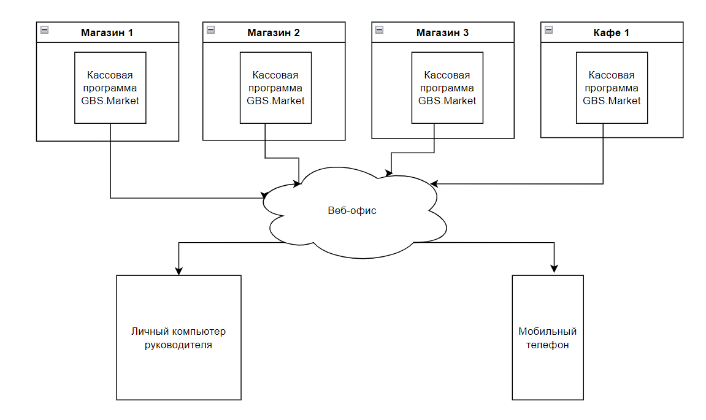
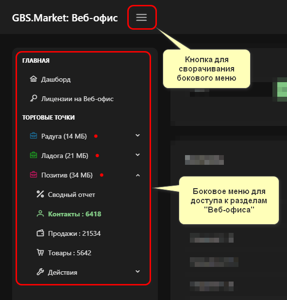
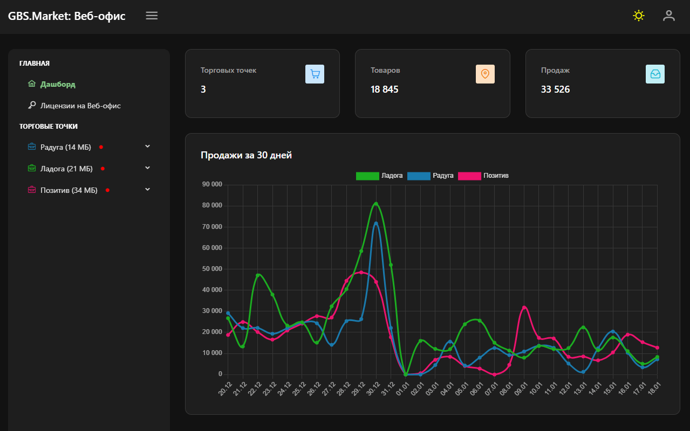
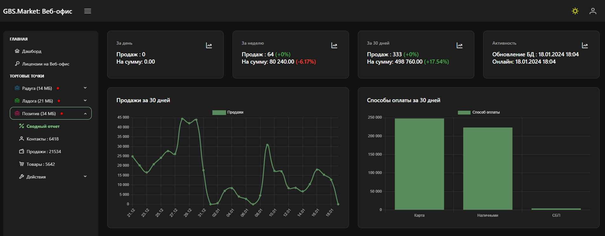
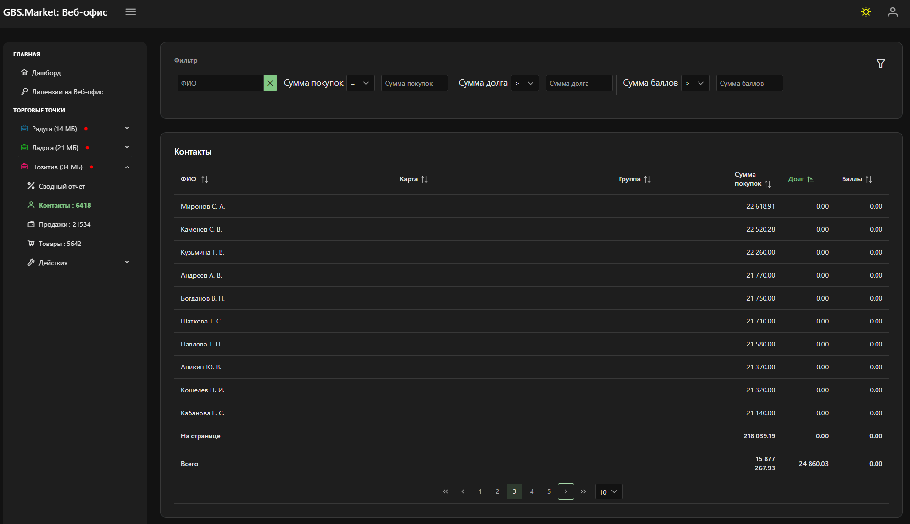
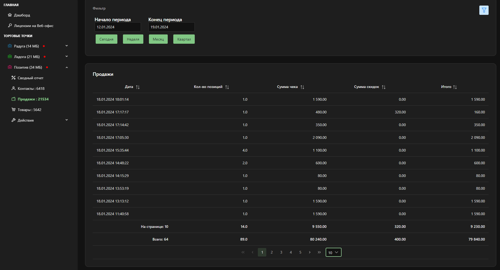
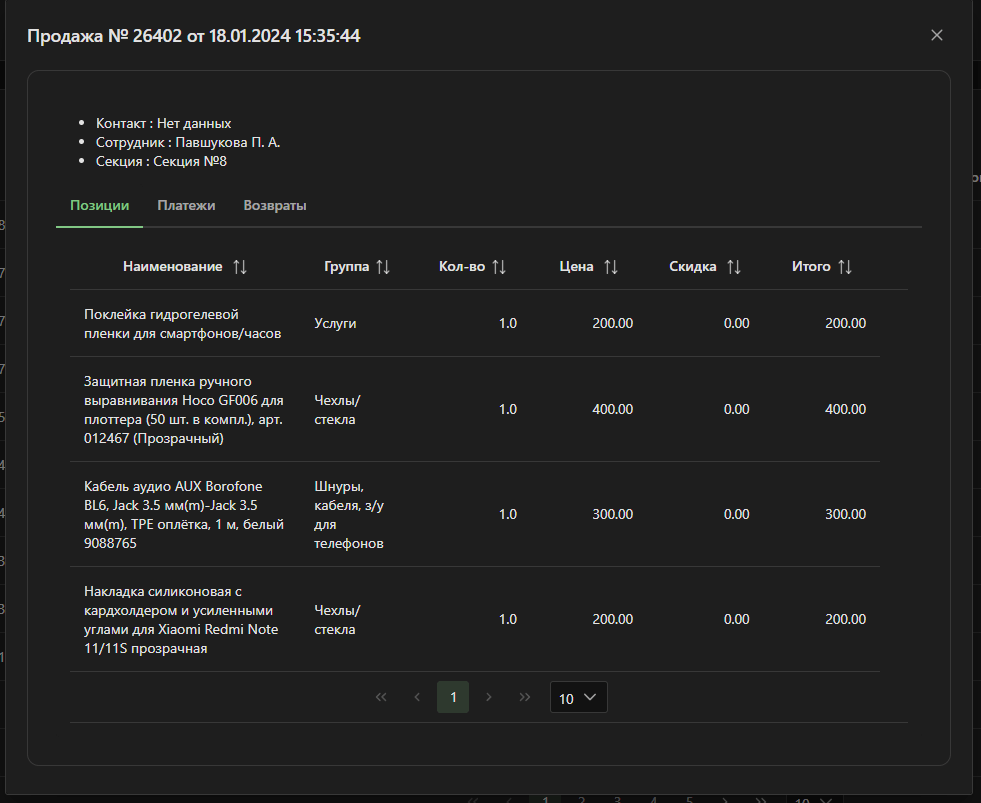
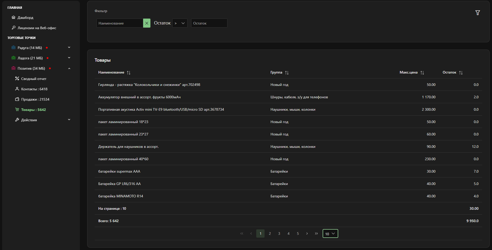
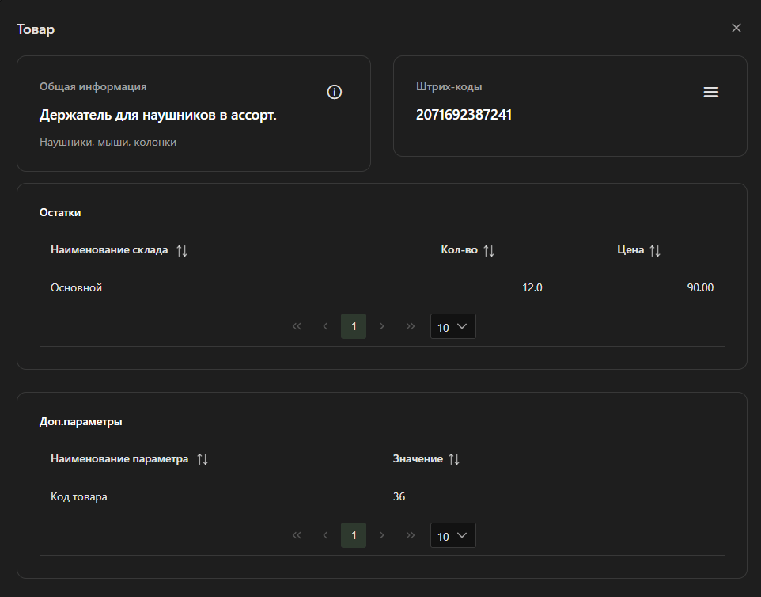

Сервис "Веб-офис" – это один из вариантов для удаленного контроля за торговыми точками, в которых используется кассовая программа GBS.Market. Веб-офис представляет собой онлайн-портал, доступ к которому можно получить с любого устройства, подключенного к сети Интернет.
Информация
Сервис находится в стадии активной разработки. Если вам недостает какой-то функциональности в сервисе, пожалуйста, напишите в службу поддержки о необходимых возможностях. Мы будем рады обратной связи по работе сервиса.

Внешний вид сервиса "Веб-офис".
Как работает "Веб-офис"
Веб-офис – это сервис, работающий на сервере в сети Интернет. Доступ к сервису возможен практически с любого устройства, которое имеет возможность выхода в Интернет.

Схема обмена данными с сервисом "Веб-офис".
На схеме выше показано, как происходит обмен данными между торговыми точками, Веб-офисом и устройствами для просмотра:
- кассовая программа выгружает данные в "Веб-офис" по расписанию;
- сервис "Веб-офис" хранит и обрабатывает эти данные;
- при открытии личного кабинета данные из торговых точек можно увидеть в браузере устройства.
Для подключения к сервису можно использовать в том числе мобильные устройства, такие как смартфон или планшет. Интерфейс сервиса адаптивен и корректно отображается во всех современных браузерах.
Доступ к сервису возможен круглосуточно, поэтому вы сможете просмотреть информацию из торговой точки даже тогда, когда она уже не работает.
Подключение к сервису "Веб-офис"
Для получения доступа к сервису "Веб-офис" необходимо пройти регистрацию. Регистрация происходит в самом сервисе, доступном по адресу https://weboffice.gbsmarket.ru. После регистрации в сервисе необходимо выполнить настройку кассовой программы GBS.Market для периодической выгрузки данных в сервис.
Полезные материалы
Возможности сервиса "Веб-офис"
Основная задача сервиса – обеспечить возможность удаленного контроля за работой торговой точки и получения отчетов о ее работе. На текущий момент сервис предполагает работу в режиме "только чтение", то есть внесение изменений в базу данных торговой точки невозможно.
Для просмотра доступны такие данные:
- Дашборд – сводная информация по всем торговым точкам;
- Сводный отчет – основная информация о работе торговой точки;
- Продажи – список продаж торговой точки;
- Товары – информация о товарах и их остатках;
- Контакты – база клиентов и покупателей.
Выбор раздела происходит в боковом меню.

Раздел "Дашборд"
Дашборд – это главный раздел сервиса "Веб-офис", в котором отображается основная информация о торговых точках.

На скриншоте выше показан пример раздела "Дашборд", где отображается информация о количестве подключенных к сервису торговых точек, общее количество товаров в этих точках и количество продаж за весь период.
Раздел "Сводный отчет"
Сводный отчет в "Веб-офисе" отображает основную информацию о работе выбранной торговой точки.

В сводном отчете можно увидеть информацию о сумме и количестве продаж за сегодня, неделю и месяц. На левом графике отображается информация об изменении выручки торговой точки, а на правом – статистика по способам оплаты.
Раздел "Контакты"
В разделе "Контакты" доступна информация о контактах, которые есть в базе торговой точки.

В этом разделе можно увидеть информацию о сумме покупок, задолженности и накопленных баллах ваших клиентов и покупателей. При выгрузке данных в сервис информация о клиентах максимально анонимизируется: ФИО сокращается до формата "Фамилия И.О.", а личные данные, такие как электронная почта или телефон, не передаются в сервис.
Для контактов доступна фильтрация:
- по ФИО;
- по сумме покупок;
- по сумме задолженности;
- по сумме баллов.
Раздел "Продажи"
В разделе "Продажи" отображается список продаж, выполненных в выбранной торговой точке.

Для каждой продажи отображается:
- дата и время продажи;
- количество позиций в чеке;
- сумма товаров;
- сумма скидки;
- общая сумма по чеку.
Отфильтровать список продаж можно по дате совершения продажи.
При клике на строку с продажей откроется карточка продажи, в которой доступна подробная информация.

В карточке продажи доступны вкладки:
- позиции – информация о товарах в чеке;
- платежи – список платежей, совершенных в рамках продажи, с указанием способа оплаты;
- возвраты – возвраты товаров, оформленные для этой продажи.
Раздел "Товары"
В этом разделе отображается информация о товарах торговой точки.

В списке товаров отображается информация:
- название товара;
- группа и категория;
- макс. цена – максимальная розничная цена для товара;
- остаток – количество товара на складе торговой точки.
Товары можно отфильтровать по названию или количеству остатка в торговой точке.
При клике на строку с товаром откроется карточка товара, в которой отображается дополнительная информация.

В карточке товара доступны такие данные:
- название товара;
- категория товара;
- основной и дополнительные штрихкоды;
- остатки в разрезе складов;
- перечень дополнительных полей товара.
Условия использования
После регистрации в сервисе предоставляется 30 дней пробного периода для ознакомления с функциональностью сервиса.
После истечения пробного периода необходимо выполнить оплату. Оплата происходит отдельно от лицензии на кассовую программу GBS.Market. Одна лицензия на "Веб-офис" подразумевает возможность просмотра данных одной торговой точки. Если необходим просмотр информации из 4 торговых точек, необходимо оплатить каждую в отдельности. При этом количество устройств, с которых может осуществляться просмотр, не ограничено. Например, если у вас 1 торговая точка, вам потребуется 1 лицензия на "Веб-офис", даже если вы будете входить в сервис с 3 своих устройств: ноутбук, планшет и телефон.
Оплатить доступ можно в личном кабинете сервиса в разделе "Лицензии на Веб-офис". Стоимость лицензий на использование сервиса "Веб-офис" доступна на странице "Тарифы".
Вопросы и ответы
Возможно ли через "Веб-офис" вносить изменения в базу магазина?
На текущий момент в "Веб-офисе" нет возможности вносить изменения в базу торговой точки. Сервис позволяет просматривать, но не редактировать информацию. При необходимости вносить изменения в базу данных торговых точек можно использовать режим "Дом/офис".